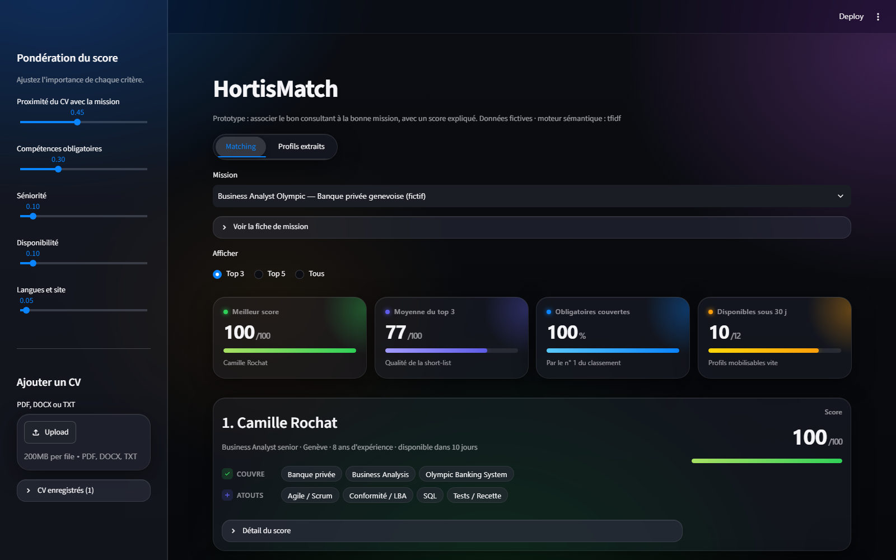
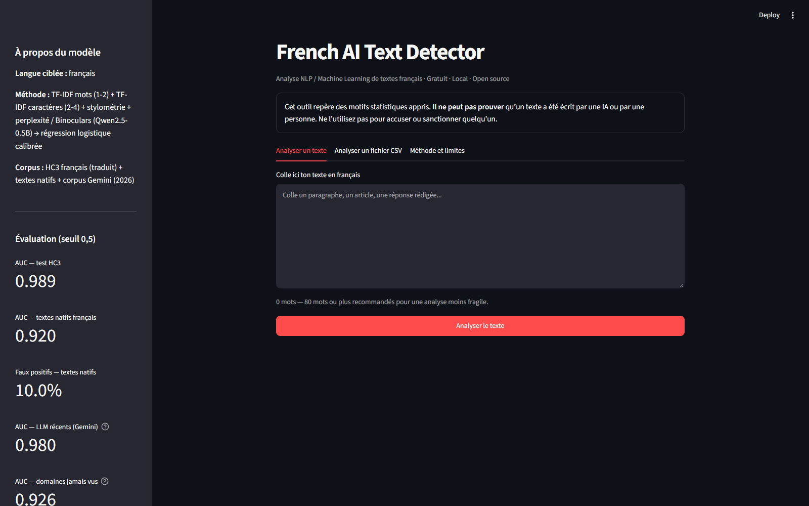
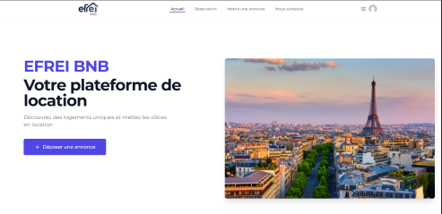
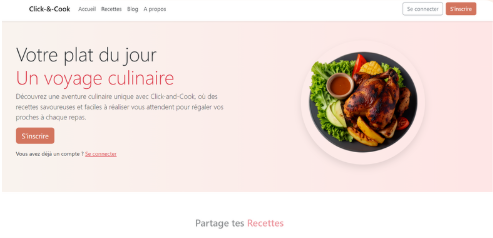
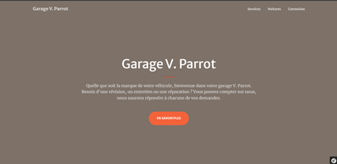

Structuration des données
Modéliser et organiser vos données (bases relationnelles, NoSQL, data lakes) pour qu'elles soient fiables et exploitables.
Mastère Data Engineer & IA · EFREI Paris
Étudiant en Mastère Data Engineer & IA (2026-2028) à l'EFREI Paris, après un Bachelor Développement Web & Application. Passionné par la data et la programmation, je m'intéresse particulièrement à l'architecture de données, au Machine Learning et au NLP, et j'aime concevoir des outils concrets, du pipeline de données jusqu'à l'interface.
Je suis toujours activement à la recherche d'une alternance en Data Engineer pour 2026-2028, avec un rythme de 2 semaines en entreprise / 1 semaine à l'école. N'hésitez pas à me contacter !
Pour votre entreprise
Modéliser et organiser vos données (bases relationnelles, NoSQL, data lakes) pour qu'elles soient fiables et exploitables.
Préparer, dédoublonner et fiabiliser les données avec Python, Pandas et SQL avant toute analyse.
Améliorer les pipelines, les requêtes et les flux d'intégration pour des traitements plus rapides et plus robustes.
Concevoir et mettre en production des solutions d'IA (Machine Learning, NLP, LLM) adaptées à vos besoins, via API et Docker.
Parcours
1re année (M1)
2e année (M2)
Compétences
Réalisations

Matching consultants / missions avec un score expliqué
Prototype d'outil de staffing qui associe en quelques secondes le bon consultant à la bonne mission, avec un score sur 100 entièrement expliqué (ce que le profil couvre, ce qui manque, détail du calcul). Le score hybride combine la similarité sémantique entre le CV et la fiche de mission (TF-IDF ou modèle multilingue sentence-transformers), les compétences extraites grâce à un référentiel FR/EN, la séniorité, la disponibilité et les langues, avec des pondérations réglables en direct. Les CV (PDF, DOCX, TXT) sont importés, analysés puis enregistrés dans une base SQLite, et un onglet dédié montre ce que l'outil a compris de chaque CV (transparence RGPD).
Voir le projet
Projet personnel · NLP & Machine Learning
Outil open source qui estime si un texte en français présente les motifs statistiques d'un texte rédigé par un humain ou généré par une IA. Le modèle combine TF-IDF (mots et caractères), stylométrie et perplexité (méthode Binoculars avec Qwen2.5-0.5B) dans une régression logistique calibrée, entraînée sur le corpus HC3 français, des textes natifs et un corpus généré avec Gemini. Il atteint une AUC de 0,989 sur le test HC3 et de 0,98 sur des textes de LLM récents. Interface Streamlit, API REST FastAPI, Docker Compose et tests automatisés avec GitHub Actions.
Voir le projet
Plateforme de réservation de logements · Hackathon
Solution complète de location de résidences : création, modification et réservation d'annonces, messagerie interne entre utilisateurs et panneau d'administration sécurisé pour accepter ou refuser les réservations. Les données sont persistées dans PostgreSQL et l'ensemble de l'application est orchestré via Docker.
Voir le projet
Application web de recettes · Symfony & PostgreSQL
Consultation, ajout, modification et suppression de recettes, avis et commentaires, gestion de blogs. CRUD complet, interface construite avec Bootstrap et Alpine.js, base PostgreSQL et déploiement via Docker Compose.
Voir le projet
Site vitrine d'un garage · Symfony
Sections services (réparation, mécanique, entretien), vente de véhicules d'occasion avec fiches détaillées (photos, prix, année, kilométrage) et horaires d'ouverture, le tout modifiable depuis une page d'administration.
Voir le projetCurriculum vitae
Alternance Data Engineer 2026-2028 · rythme 2 semaines entreprise / 1 semaine école.